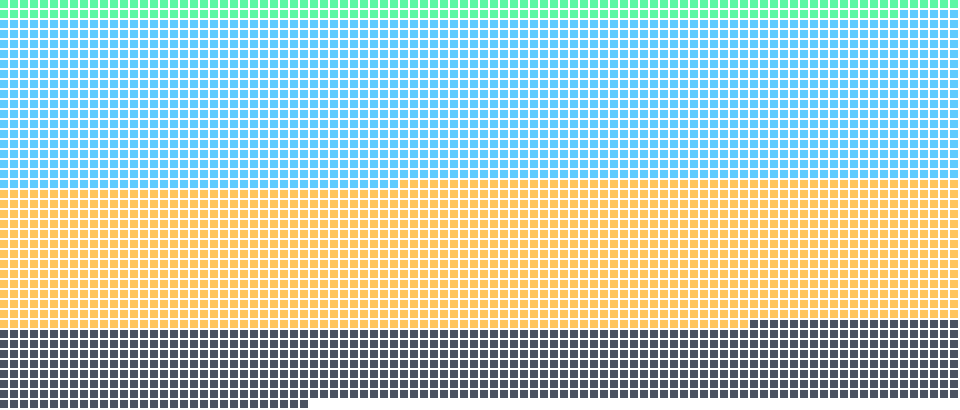

mcp-builder
Guides building MCP servers that let LLMs use external services through tools, in Python with FastMCP or TypeScript with the MCP SDK.
Apache-2.0 · Full skill page
89/100 · B
SuedeAI.directory, by Suede AI
3,871 skills for Claude Code, Codex, Cursor and other agents, scored 0 to 99 from their published files and linked to source, with the install command for each.
162 repositories16 categories97% openly licensedSnapshot October 22, 2026

Every dot is a listed skill, sorted by score.ABCD
Ranked by installs recorded by skills.sh, by Suede Skill Check score, and by what is new. Suede AI's own skills are not ranked.
Installs recorded by skills.sh for the skills CLI, read November 2, 2026.The 100 most installed skills
Suede Skill Check scores, 0 to 99, from each skill's published files.The top 100 by score
Installs in the latest week skills.sh reports, among the skills it keeps history for.The 100 rising skills
Skills first listed in the 30 days before the October 22, 2026 snapshot.All new and updated skills
Listed skills whose repository changed in the 30 days before the snapshot.All recently updated skills
Search could not load. Try again, or browse a category.
Guides building MCP servers that let LLMs use external services through tools, in Python with FastMCP or TypeScript with the MCP SDK.
Apache-2.0 · Full skill page
Guides deciding how to integrate completed work once implementation is finished and all tests pass.
MIT · Full skill page
Plans, designs, and implements A/B tests and experiments, and helps build a growth experimentation program, including hypotheses and multivariate tests.
MIT · Full skill page
Generates an Ansoff Matrix analysis mapping growth strategies across market penetration, market development, product development, and diversification.
MIT · Full skill page
 81/100 · B
81/100 · BGenerates publication-quality figures for ML papers, including architecture diagrams via Gemini and data-driven charts via matplotlib or seaborn, from research context.
MIT · Full skill page
Guides use of Apple's container CLI to build, run, and manage OCI and Linux containers on Apple-silicon macOS without a Docker daemon.
Apache-2.0 · Full skill page
Creates original generative art with p5.js using seeded randomness and interactive parameter exploration, such as flow fields and particle systems.
Apache-2.0 · Full skill page
Appends two or three short follow-up questions after substantive answers, helping users check key facts, probe reasoning and assumptions, and notice missing context.
Apache-2.0 · Full skill page
Try fewer words or a broader category.
Choose up to five skills from the results. Your shortlist stays in this page’s URL, ready to bookmark or share.
The editorial selection, newest first: reviewed source, reviewed scope and the setup each one needs.
Jason Colapietro's picks: the third-party skills to combine for one job, with the install commands, and the Suede AI skill that covers the task named up front.
suede-site-alchemy
Which agent skills help you rank in Google and get cited by AI?A short, measured stack for search rankings and AI citations, built around live SEO data and first-party WebMCP tools.Suede pick: suede-seo-audit
What is the best agent skill stack for code review?A reviewer, a security pass, a verification gate and a comment rewriter, with scores and install commands.Suede pick: suede-code
Which agent skills should you stack to design a polished UI?Reference extraction, variant exploration, build, audit and motion, in order, with scores and install commands.Suede pick: suede-design
What is the best agent skill stack for content and social posts?Plan, angle, draft, polish, profile and distribution, covered by six scored skills with install commands.Suede pick: suede-copy
Which agent skills should you stack for documents and data?Word documents, long reading, literature reviews, read-only SQL and data slides, with scores and a plain note on licenses.Suede pick: suede-analytics
The other things an agent setup is made of. Listed from their publishers' repositories; only skills carry a Suede Skill Check score.
Every full page lists what the skill's files touch before you install: bundled scripts, commands, credentials, outside hosts and MCP servers. The directory does not security scan any listed skill, and every listing says so.
Repositories that appear in the most curated skill lists.
Collections published by the company that makes the product, framework or service the skills work with.
The directory reads every SKILL.md in the repositories cited by at least two of 8 curated lists, including BehiSecc/awesome-claude-skills, ComposioHQ/awesome-claude-skills, VoltAgent/awesome-agent-skills, plus the official collections those lists name and accepted listing requests. Each skill runs through the Suede Skill Check. Skills that pass the required frontmatter check, declare a license and pass at least six of seven graded checks are listed with a quality score from 0 to 99, one listing per skill: when a copy of a skill appears in several repositories, the copy in the most-cited repository keeps the listing. Read the full method.
Every skill scoring 80–99 has two README shields: its numeric quality score and its A/B grade. Both link to its Suede AI listing. Find Get badges on a repository page or README badge on a full skill page. Request a listing if your skill is not here yet, or run the free Skill AI-visibility check to see the points your skill can still earn.

[](https://skills.suedeai.ai/directory/)<a href="https://skills.suedeai.ai/directory/"><img src="https://skills.suedeai.ai/directory/badge.svg" alt="Suede AI Skills Directory: listed" height="20"></a>Limited-time feature offer: Display either quality badge in your repository or skill README, linked to your listing, then request verification. Suede AI checks the rendered README at a recorded commit. Eligible skills scoring 80–99 with a verified badge can receive a featured placement while the offer is open. Request badge verification.
1NickPappas/move-code-quality-skill · activeloopai/hivemind · agentrhq/authsome · agiwhitelist/auteur · AgriciDaniel/claude-seo · Alisa0808/vibe-creating-skill · Alisa0808/vox-director · alonw0/web-asset-generator · angular/skills · anthropics/claude-plugins-official · anthropics/skills · antonbabenko/terraform-skill · apify/agent-skills · apitube/news-api-skills · apollographql/skills · appierun/appie-mcp · avelikiy/great_cto · aws/agent-toolkit-for-aws · bitwize-music-studio/claude-ai-music-skills · bluzername/claude-code-terminal-title · Bria-AI/bria-skill · browser-use/browser-use · browserbase/skills · BuildShipGrowRepeat/nextjs-sanity-blog-skill · cloudflare/security-audit-skill · cloudflare/skills · coderabbitai/skills · coinpaprika/skills · composiohq/skills · conorbronsdon/avoid-ai-writing · conorluddy/ios-simulator-skill · Continuum-AI-Corp/OrcaReplay · coreyhaines31/marketingskills · costory-io/costory-finops-mcp-skills · csthink/dashmotion · cypress-io/ai-toolkit · danjdewhurst/story-skills · deanpeters/Product-Manager-Skills · Digidai/product-manager-skills · eduardo-sl/go-agent-skills · EmblemCompany/Agent-skills · Ericyoung-183/alpha-insights · expo/skills · fal-ai-community/skills · firebase/skills · firecrawl/skills · flutter/skills · garrytan/gstack · geekflare/geekflare-skills · getsentry/skills · github/awesome-copilot · glacierphonk/naming · google-labs-code/stitch-skills · google/skills · googleworkspace/cli · gooseworks-ai/goose-skills · hashicorp/agent-skills · HeshamFS/materials-simulation-skills · heygen-com/hyperframes · honeydew-ai/honeydew-ai-coding-agents-plugins · hqhq1025/skill-optimizer · HUANGCHIHHUNGLeo/claude-real-video · huggingface/skills · humanpen/humanpen-skill · ilyautov/humanizer-ru · infrasity-labs/dev-gtm-claude-skills · inhouseseo/superseo-skills · jakedahn/pomodoro · JasonColapietro/suede-creator-skills · jeffallan/claude-skills · K-Dense-AI/claude-scientific-skills · k-kolomeitsev/data-structure-protocol · lackeyjb/playwright-skill · LambdaTest/agent-skills · langchain-ai/langchain-skills · Leonxlnx/taste-skill · lukstei/slop-grader · luoyuctl/agenttrace · mailtrap/mailtrap-skills · makenotion/notion-cookbook · makenotion/skills · Maksim-Burtsev/simple-man · massimodeluisa/recursive-decomposition-skill · mattpocock/skills · mblode/agent-skills · mcollina/skills · MelMayssonOwen/agent-skills · metalbear-co/skills · mhattingpete/claude-skills-marketplace · michalparkola/tapestry-skills-for-claude-code · microsoft/azure-skills · MiniMax-AI/skills · modem-dev/skills · MohamedAbdallah-14/unslop · muratcankoylan/Agent-Skills-for-Context-Engineering · muthuishere/hand-drawn-diagrams · Necmttn/ax · NeoLabHQ/context-engineering-kit · neondatabase/agent-skills · nextlevelbuilder/ui-ux-pro-max-skill · nowork-studio/NotFair · NVIDIA/skills · obra/superpowers · obra/superpowers-lab · Octav-Labs/octav-api-skill · ohad6k/emulo · openai/skills · Orchestra-Research/AI-Research-SKILLs · Orkas-AI/Orkas-VideoStudio · pbakaus/impeccable · phuryn/pm-skills · PleasePrompto/notebooklm-skill · praneybehl/llm-wiki-plugin · product-on-purpose/pm-skills · PSPDFKit-labs/nutrient-agent-skill · qdrant/skills · Qiuner/birdview · realkimbarrett/advertising-skills · redis/agent-skills · renezander030/capcut-cli · replicate/skills · resend/resend-skills · sanity-io/agent-toolkit · sanjay3290/ai-skills · SawyerHood/dev-browser · sergebulaev/linkedin-skills · serpapi/skills · shepsci/kaggle-skill · smixs/creative-director-skill · stripe/ai · supabase/agent-skills · superdesigndev/superdesign-skill · swarmclawai/swarmclaw · swarmclawai/swarmvault · takechanman1228/claude-ecom · takechanman1228/claude-persona · Tencent/AI-Infra-Guard · testdino-hq/playwright-skill · tjboudreaux/cc-thinking-skills · trailofbits/skills · tronghieu/agent-skills · trycourier/courier-skills · tt-a1i/archify · tubeagentkit/youtube-transcript-skills · unbrowse-ai/unbrowse · veniceai/skills · vercel-labs/agent-browser · vercel-labs/agent-skills · vercel-labs/skills · vercel/ai · VoltAgent/skills · vonarmen-wq/forward-deployed-selling · vostride/agent-qa · wgwtest/novel-writing · wondelai/skills · wrsmith108/varlock-claude-skill · ykdojo/claude-code-tips · yusufkaraaslan/Skill_Seekers · yzfly/Mind-Cloning-Engineering · zarazhangrui/frontend-slides · ZeroPointRepo/youtube-skills · zxkane/aws-skills
The Suede AI Skills pack offers a page per skill and a one-command install for the whole pack. Its accepted directory entries use the same published scoring method.
The directory ranks 3,871 public Claude Code skills by the Suede Skill Check, a 0 to 99 score for structure, description quality, instruction depth, bundled files, maintenance and curated-list citations. 186 skills earn grade A (90 to 99). In the October 22, 2026 snapshot the highest-scoring skills with full pages include go-ci from eduardo-sl/go-agent-skills (95/100), linkedin-employee-advocacy from sergebulaev/linkedin-skills (94/100) and let-fate-decide from trailofbits/skills (94/100). The best skill for a task depends on the job, so each category directory lists its own top scores.
An agent skill is a folder with a SKILL.md file: a name, a one-line description of when to use it, and instructions the agent loads on demand. Claude Code, Codex, Cursor and other agents that support the Agent Skills format can install the same folder.
Each skill page lists three routes: the skills CLI (npx skills add with the skill folder's GitHub URL), a project-level copy into .claude/skills for Claude Code, and a project-level copy into .agents/skills for Codex. Each route installs the folder from the author's GitHub repository. Skills published under license terms that restrict copying show those terms instead. Step by step: How to install agent skills in Claude Code, Codex and Cursor.
The directory reads repositories cited by at least two of eight curated skill lists, plus the official collections those lists name and accepted listing requests. Each skill runs through the Suede Skill Check: a required frontmatter check and seven graded checks (five on the SKILL.md format, a declared license and a commit in the last year). Skills that pass the frontmatter check, declare a license, pass at least six of the seven graded checks and meet the listing rules are listed. Each listed skill then receives a quality score from 0 to 99 that adds description quality, instruction depth, bundled files, maintenance and curated-list citations to the structural checks, and a letter grade from that score.
Open a listing request on GitHub with the repository URL. Requests are reviewed by hand; an accepted repository is read at the next directory refresh, and its skills are listed if they pass the check.
Yes. Open a removal request on GitHub and the skill comes out at the next build.